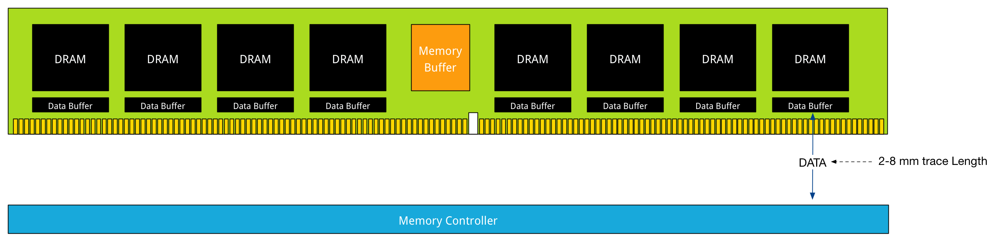
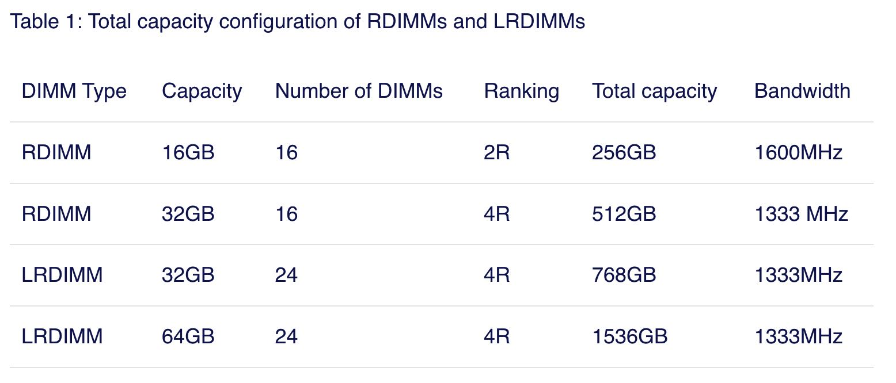

MEMORY DEEP DIVE: MEMORY SUBSYSTEM ORGANISATION
https://frankdenneman.nl/2015/02/18/memory-tech-primer-memory-subsystem-organization/
DIMM Ranking和单个DIMM容量之间的关系如，此外Rank可能并不涉及到传输单位大小，只是存储组织单元大小。但是Ranking之间是可以并行处理的。
DIMMs come in three rank configurations; single-rank, dual-rank or quad-rank configuration, ranks are denoted as (xR). Together the DRAM chips grouped into a rank contain 64-bit of data. If a DIMM contains DRAM chips on just one side of the printed circuit board (PCB), containing a single 64-bit chunk of data, it is referred to as a single-rank (1R) module. A dual rank (2R) module contains at least two 64-bit chunks of data, one chunk on each side of the PCB. Quad ranked DIMMs (4R) contains four 64-bit chunks, two chunks on each side.
To increase capacity, combine the ranks with the largest DRAM chips. A quad-ranked DIMM with 4Gb chips equals 32GB DIMM (4Gb x 8bits x 4 ranks). As server boards have a finite amount of DIMM slots, quad-ranked DIMMs are the most effective way to achieve the highest memory capacity. As mentioned before there are some limitations when it comes to the amount of ranks used in a system. Memory controllers use channels to communicate with DIMM slots and each channel supports a limited amount of ranks due to maximal capacitance.
DIMM(Dual Inline Memory Module)(与之对应的就还有SIMM)有好几种类型：
- UDIMM. Unregistered DIMM. 这种类型的DIMM上面没有配置register, 加上电压之后就直接读取，中间没有缓存。缺陷在于随着容量增加，memory controller connection容易出现过载造成错误，所以容量通常没有办法做大。
- RDIMM(Registered DIMM). 在data lane上增加了register
- LRDIMM(Load Reduced DIMM). 从DDR3开始引入的技术，在data lane/control lane上都增加了register
There are different types of DIMMs, registered and unregistered. Unregistered DIMM (UDIMM) type is targeted towards the consumer market and systems that don’t require supporting very large amounts of memory. An UDIMM allows the memory controller address each memory chip individually and in parallel. Each memory chip places a certain amount of capacitance on the memory channel and weakens the signal. As a result, a limited number of memory chips can be used while maintaining stable and consistent performance.
Servers running virtualized enterprise applications require a high concentration of memory. However with these high concentrations, the connection between the memory controller and the DRAM chips can overload, causing errors and delays in the flow of data. CPU speeds increase and therefor memory speeds have to increase as well. Consequently higher speeds of the memory bus leads to data flooding the channel faster, resulting in more errors occurring.
To increase scale and robustness, a register is placed between the DRAM chips and the memory controller. This register, sometimes referred to as a buffer, isolates the control lines between the memory controller and each DRAM chip. This reduced the electrical load, allowing the memory controller to address more DRAM chips while maintaining stability. Registered DIMMs are referred to as RDIMMs. Load Reduced DIMMs (LRDIMMs) were introduced in the third generation of DDR memory (DDR3) and buffers both the control and data lines from the DRAM chips. This decreases the electrical load on the memory controller allowing for denser memory configurations. The increased memory capacity leads to increased power consumption, however by implementing the buffer structure differently it provides substantially higher operating data rates than RDIMMs in the same configuration.
The key to increased capacity and performance of LRDIMMs is the abstraction of DRAM chips and especially the rank count by the buffer. RDIMMs register only buffers the command and address while leaving the more important data bus unbuffered. This leaves the group of DRAM chips (ranks) exposed to the memory controller. A memory controller accesses the grouped DRAM chips simultaneously. A Quad rank DIMM configuration presents four separate electrical loads on the data bus per DIMM. The memory controller can handle up to a certain amount of load and therefor there is a limitation on the number of exposed ranks. LRDIMMs scale to higher speeds by using rank multiplication, where multiple ranks appear to the memory controller as a logical rank of a larger size.
下图是DDR4 LRDIMM的结构图：memory buffer用来缓冲控制数据，data buffer用来缓冲实际数据

这里的Number of DIMMS是指CPU上最多支持这些DIMMS, 可能是因为电压的原因不能再多了。每个DIMM capacity * Number of DIMMS就是最大容量。Bandwidth是在全部将CPU Channels(3 DPC)都用完的情况下的带宽频率。

When comparing 32GB LRDIMMs and 32GB Quad Rank RDIMMs it becomes apparent that LRDIMMS allow for higher capacity while retaining the bandwidth. For example, a Gen 12 Dell R720 contains two Intel Xeon E5 2600 CPU, allowing up to 1.5TB of RAM. The system contains 24 DIMM slots and allows up to 64GB DDR3 DIMMs up to 1866 Mhz. Dells memory configuration samples only contain configurations up to 1600 MHz.